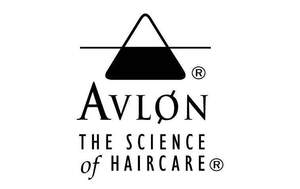

Trade Mark Journal No.2026/010 6 March 2026
UK00004322114 11 January 2026 (3,44)

- Class 3
- Hair conditioner; Hair shampoo; Hair styling lotions; Hair shampoos; Hair conditioners; Hair styling gel; Hair styling spray; Styling sprays for the hair; Hair moisturising conditioners; Baby hair conditioner; Hair conditioner bars; Hair styling gels; Styling gels for the hair; Mousses [toiletries] for use in styling the hair; Shampoo; Hair styling waxes; Hair lotion; Hair moisturizers; Oils for hair conditioning; Styling paste for hair; Hair moisturisers; Mousses being hair styling aids; Conditioners for treating the hair; Hair mousse; Hair gel; Hair emollients; Hair spray; Hair pomades; Hair lotions; Shampoos for human hair; Hair styling preparations; Hair serums; Non-medicated hair shampoos; Hair cosmetics; Dandruff shampoo; Hair sprays; Hair conditioners for babies; Hair relaxers; Hair rinses; Hair balm; Hair texturizers; Conditioners for use on the hair; Hair oils; Hair mousses; Styling lotions; Hair bleach; Colouring lotions for the hair; Hair mascara; Hair cream; Hair colourants; Hair gels; Shampoos; Hair balms; Conditioning preparations for the hair; Hair lighteners; Hair creams; Hair rinses [shampoo-conditioners]; Cosmetic hair lotions; Styling mousse; Hair care lotions; Hair dye; Hair protection mousse; Hair care serums; Hair lacquer; Hair bleaches; Wax treatments for the hair; Hair tonic; Hair colorants; Hair lacquers; Hair tonic [for cosmetic use]; Dyes for the hair; Hair dyes; Hair powder; Hair wax; Hair tonics; Hair oil; Cosmetic preparations for the hair and scalp; Car shampoos; Hair nourishers; Hair colouring; Hair neutralizers; Gel sprays being styling aids; Hair protection lotions; Hair strengthening treatment lotions.
- Class 44
- Hair styling.
Avlon Europe Limited